Ferramentas
inteligentes
para seus dispositivos.
Aplicativos gratuitos que ajudam no dia a dia, da produtividade ao acesso remoto e ao gerenciamento seguro do espaço dos seus discos.

Copie textos, links, fotos e arquivos em um dispositivo e acesse em qualquer outro pelo navegador ou pelo aplicativo para Windows.

VozDigitada
DisponívelTransforme sua voz em texto no campo ativo de qualquer programa. Atalhos de teclado, Enter automático, dicionário inteligente e balão flutuante.

DriverStatus
DisponívelDiagnostica drivers do seu PC, identifica problemas e sugere soluções. Integra com Windows Update, backup de drivers e facilita a interação com a IA.

TelaDesk
Verificando disponibilidadeUma alternativa ao AnyDesk para acesso remoto protegido pela rede local ou internet, com conexão por código ou convite, controle da tela e transferência de arquivos.

AjusteHD
Verificando disponibilidadeOrganize o espaço dos discos com visão do antes e depois. Transfira espaço, reduza, crie ou remova partições com proteções e confirmação.
Em breve...
DesenvolvimentoNovo aplicativo em desenvolvimento. Fique atento para novidades!
De problemas reais, nascem soluções reais
Sou programador e crio ferramentas que eu mesmo uso no dia a dia. Quando encontro um problema que não tem boa solução gratuita, eu construo uma.
O VozDigitada nasceu porque eu precisava ditar texto sem pagar assinatura — um app simples que transforma voz em texto em qualquer programa, com Enter automático e comandos de voz.
O DriverStatus nasceu porque diagnosticar drivers no Windows é frustrante — um app que escaneia o hardware, identifica problemas e facilita a busca pela solução certa, inclusive com IA.
Todas as minhas ferramentas são 100% gratuitas, sem anúncios, sem coleta de dados. Feitas por quem realmente usa, para quem realmente precisa.
❤️ Gostou? Apoie o projeto!
Todas as ferramentas são 100% gratuitas e sem anúncios.
Se elas te ajudam no dia a dia, considere fazer uma doação de qualquer valor.
Pix
Cartão de Crédito / Débito

Pagamento seguro via Mercado Pago.
Você será redirecionado para o site oficial.
PayPal
Pagamento seguro via PayPal.
Você será redirecionado para o site oficial.
Fale Comigo
Meu objetivo é criar ferramentas que melhorem seu dia a dia.
Se tiver alguma dúvida, sugestão ou precisar de ajuda,
ficarei feliz em responder!
Carregando versão...
Transforme sua voz em texto
instantaneamente.
O VozDigitada transforma sua voz em texto no campo ativo de qualquer programa. Pressione um atalho para gravar e o texto aparece no aplicativo original. Tem Enter automático, microfone sempre ligado, comandos de voz, dicionário inteligente e um balão flutuante que mostra o status.


Reconhecimento de Voz
Captura sua voz e digita automaticamente no campo ativo de qualquer programa com precisão.
Atalhos de Teclado
Um atalho para gravar e parar, outro para gravar, parar e enviar (Enter automático). Totalmente configurável.
Comandos de Voz
Controle por voz: "Voz gravar", "Voz parar", "Voz enviar" e outros — sem tocar no teclado.
Microfone Sempre Ligado
Ative o microfone permanente e controle tudo por comandos de voz. Pode desativar temporariamente quando quiser.
Dicionário Inteligente
Corrija palavras que o reconhecimento erra e o app aprende. Exportar, importar e backup automático na nuvem.
Balão Flutuante Móvel
Um balão na tela indica o status da gravação. Arraste para qualquer posição — ele lembra onde você deixou.
Atualização Automática
O app verifica e baixa atualizações automaticamente. Sempre na última versão disponível.
Configuração Completa
Personalize atalhos, idioma, sensibilidade do reconhecimento e comportamento do balão indicador.
Inicia com Windows
Configure para iniciar automaticamente com o sistema, já com o microfone sempre ligado se preferir.
Sim! O VozDigitada digita no campo ativo de qualquer programa do Windows — navegadores, editores de texto, Excel, e-mail, ERPs, terminais e mais. Basta o cursor estar posicionado em um campo de texto.
O reconhecimento nativo do Windows pode usar o serviço online da Microsoft, conforme as configurações de fala do sistema. Se ele não responder, o VozDigitada usa uma contingência local; o modelo dessa contingência (aproximadamente 142 MiB) é baixado uma única vez e o áudio dela não é enviado para a internet.
100% gratuito, sem limite de palavras, sem assinatura, sem período de teste e sem anúncios. Você pode usar o quanto quiser, para sempre.
Você configura dois atalhos: um para gravar/parar normalmente, e outro que grava, para e envia (pressiona Enter automaticamente). Ideal para Visual Studio Code, Microsoft Teams, Bloco de Notas, campos de busca e qualquer programa — fale e envie sem tocar no teclado.
É um modo onde o microfone fica permanentemente ativo, aguardando comandos de voz. Você controla tudo falando: "Voz gravar", "Voz parar", "Voz enviar" — sem precisar tocar no teclado em momento algum.
Quando o reconhecimento de voz erra uma palavra, você cadastra a correção no dicionário. Na próxima vez, o app corrige automaticamente. Funciona com palavras individuais e frases de até 3 palavras. Você pode exportar, importar e fazer backup automático.
Sim! O VozDigitada funciona em português brasileiro.
O VozDigitada não coleta nenhum dado pessoal, não envia áudio para servidores e não possui telemetria. Todo o processamento é local. O código é transparente e o app está disponível na Microsoft Store.
⬇️ VozDigitada para Windows
Carregando versão...
Download disponível
Diagnostique seus drivers
em segundos.
O DriverStatus escaneia todo o hardware do seu PC, identifica dispositivos com problemas e sugere a melhor solução: Windows Update, driver oficial ou pesquisa online. Faz backup de drivers, cria pontos de restauração e facilita a interação com a IA.


Scan Completo
Escaneia todo o hardware do PC via WMI. Identifica dispositivos sem driver, com falha ou com problemas.
Windows Update
Busca drivers disponíveis no Windows Update e instala com um clique. Cria ponto de restauração automaticamente.
Base de Conhecimento
Identifica dispositivos por VID/PID e sugere a melhor solução: driver oficial, Windows Update ou download direto.
Assistência por IA
Copia informações do dispositivo e abre o Google Gemini para análise inteligente. Sem custo de API.
Backup de Drivers
Exporte todos os drivers instalados para uma pasta. Restaure quando precisar com um clique.
Ponto de Restauração
Crie pontos de restauração do Windows antes de qualquer alteração. Segurança antes de tudo.
Consulta Online
Busca em bases USB e PCI internacionais para identificar dispositivos desconhecidos automaticamente.
Pesquisa Google
Gera pesquisa automática no Google com o nome do dispositivo e versão do Windows para encontrar o driver.
100% Local e Seguro
Não coleta dados, não envia informações. Todo o processamento acontece no seu computador.
Ele complementa. O DriverStatus faz um diagnóstico mais profundo, identifica dispositivos problemáticos, consulta bases online e sugere soluções — algo que o Gerenciador de Dispositivos não faz.
O scan básico funciona sem admin. Recursos avançados como Windows Update, backup de drivers e pontos de restauração pedem elevação de privilégios automaticamente quando necessário.
O DriverStatus usa o próprio Windows Update para instalar drivers — a mesma fonte que o Windows usa. Além disso, cria ponto de restauração antes de qualquer alteração.
O app copia as informações do dispositivo e abre o Google Gemini no navegador. Você cola com Ctrl+V e a IA analisa o problema. Sem custo de API, sem conta obrigatória.
Não. O DriverStatus é 100% local. Não envia nenhuma informação para servidores, não tem telemetria e não coleta dados pessoais.
⬇️ DriverStatus para Windows
Versão mais recente
Verificando download...
Acesso remoto simples e protegido
para seus computadores.
O TelaDesk conecta computadores por código ou convite temporário, pela rede local ou internet. Você decide as permissões de cada sessão e pode controlar a tela, compartilhar a área de transferência e enviar arquivos.
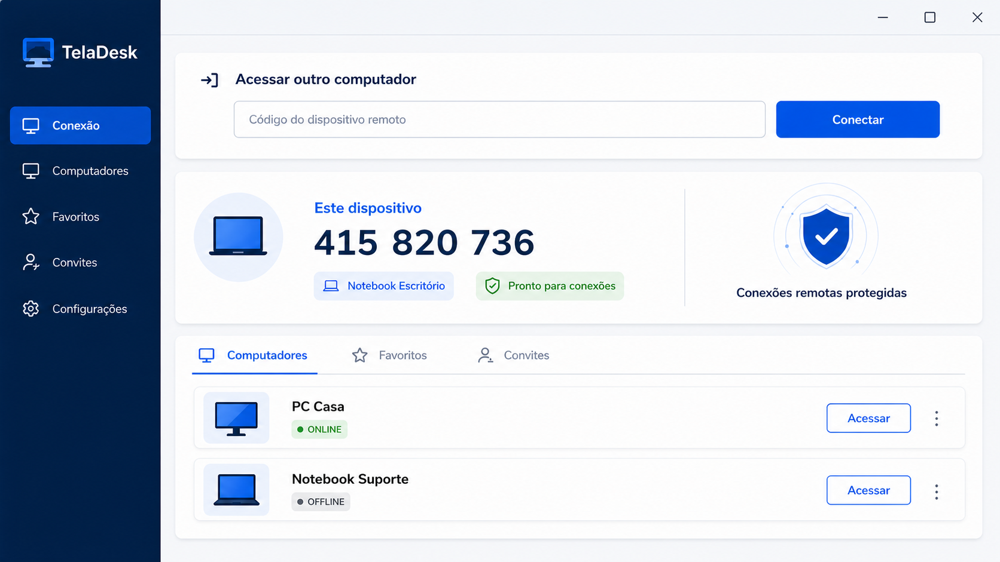
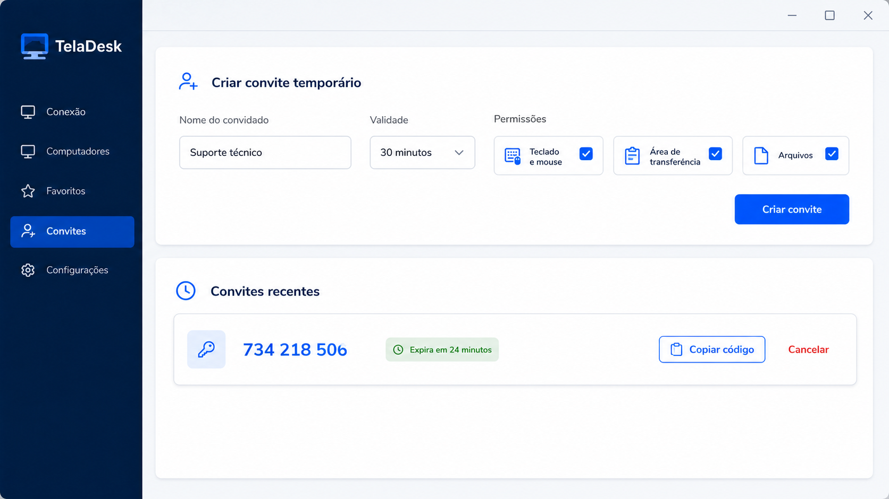
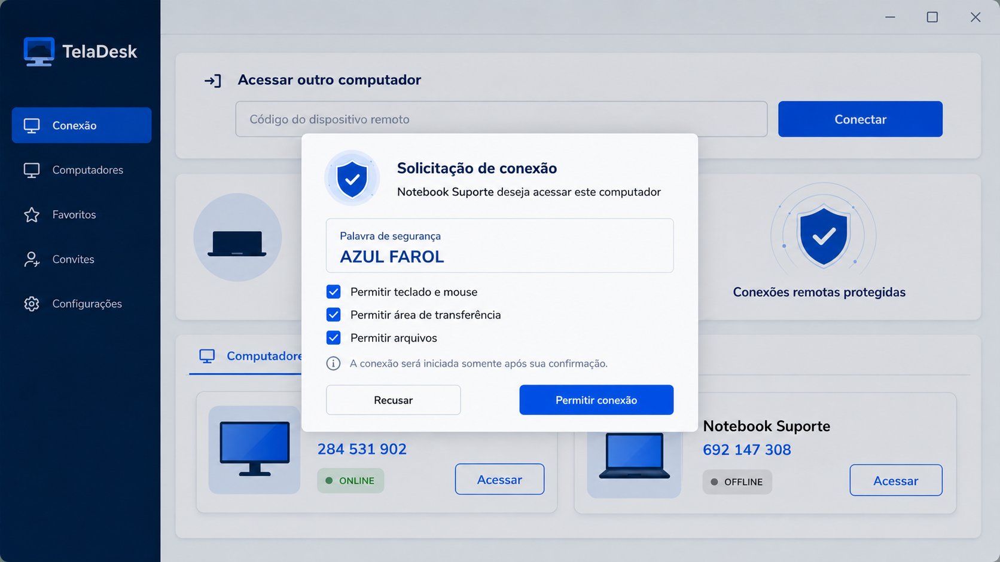
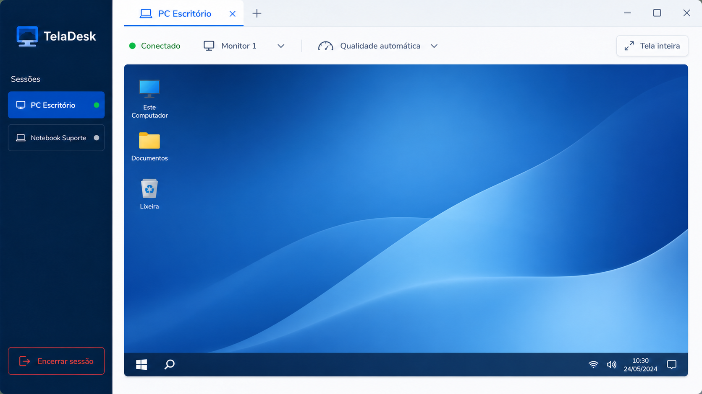
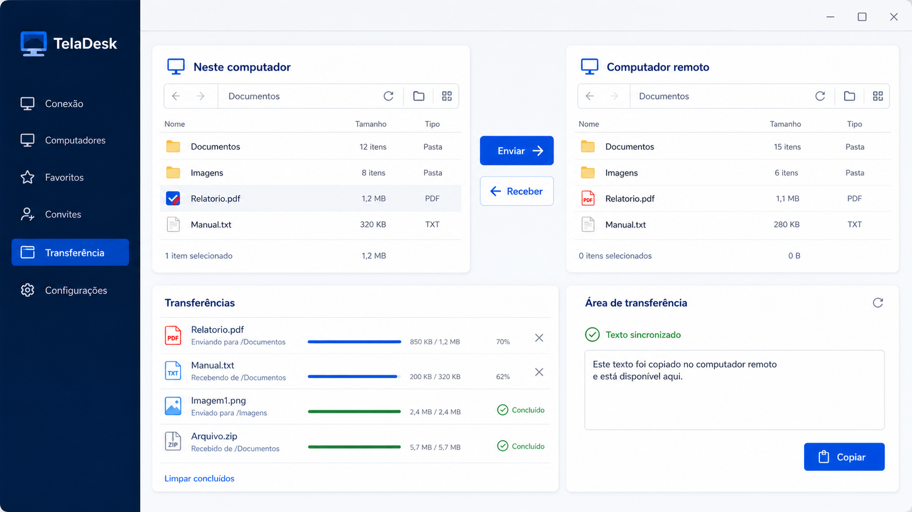
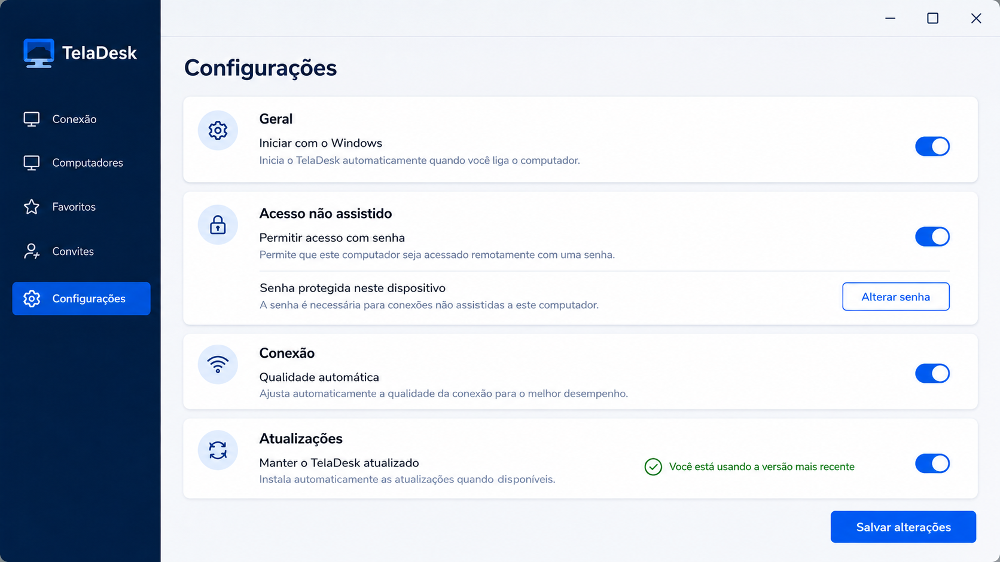
Acesso por Código
Digite o código do outro computador e envie uma solicitação de conexão.
Convites Temporários
Crie um convite de uso único, com validade limitada, para prestar ou receber ajuda.
P2P com Relay
A conexão tenta o caminho direto entre os computadores e usa relay quando necessário.
Sessões em Abas
Organize diferentes computadores e sessões em uma única janela.
Permissões por Sessão
Autorize separadamente tela, teclado e mouse, área de transferência e arquivos.
Textos e Arquivos
Copie textos entre os computadores e transfira arquivos durante a sessão.
Palavra de Segurança
Confirme a mesma palavra nos dois lados antes de aceitar uma sessão sensível.
Acesso Não Assistido
Proteja o acesso permanente com credenciais armazenadas de forma segura no Windows.
Atualização Automática
Receba novas versões pelo atualizador do aplicativo quando estiverem disponíveis.
Verificando o download. O TelaDesk é um produto independente e não possui vínculo com o AnyDesk.
Use o código exibido no outro computador ou um convite temporário. A pessoa que recebe a solicitação revisa e aceita as permissões antes do início da sessão.
Sim. O TelaDesk funciona pela rede local ou internet. Ele tenta uma conexão direta P2P e pode usar um servidor relay quando o caminho direto não estiver disponível.
O computador que recebe a conexão escolhe as permissões da sessão, incluindo controle de teclado e mouse, área de transferência e arquivos.
É uma confirmação visual que pode ser comparada nos dois computadores para reduzir o risco de aceitar a sessão errada.
Sim, quando essas permissões forem autorizadas. Arquivos e conteúdo da área de transferência trafegam somente durante a operação solicitada.
Sim. Ele pode ser configurado no computador remoto e protegido por credencial. Use esse modo apenas em dispositivos sob sua responsabilidade.
O aplicativo pode manter logs técnicos para funcionamento e diagnóstico, mas não grava automaticamente o vídeo da tela nem o conteúdo dos arquivos transferidos.
A versão da Microsoft Store está planejada, mas ainda não foi publicada. Por enquanto, use somente o instalador direto validado nesta página.
⬇️ TelaDesk para Windows
Verificando download...
Verificando download...
Organize o espaço do seu disco
com clareza e proteção.
O AjusteHD mostra como os discos e partições estão organizados antes de qualquer alteração. Transfira espaço, reduza, crie ou remova partições com revisão do resultado e confirmações em cada etapa.
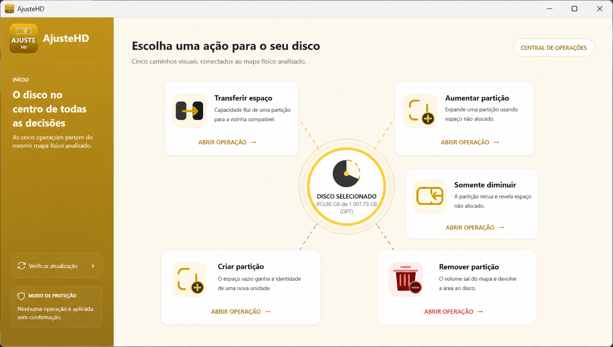
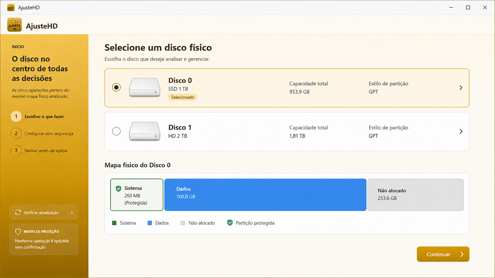
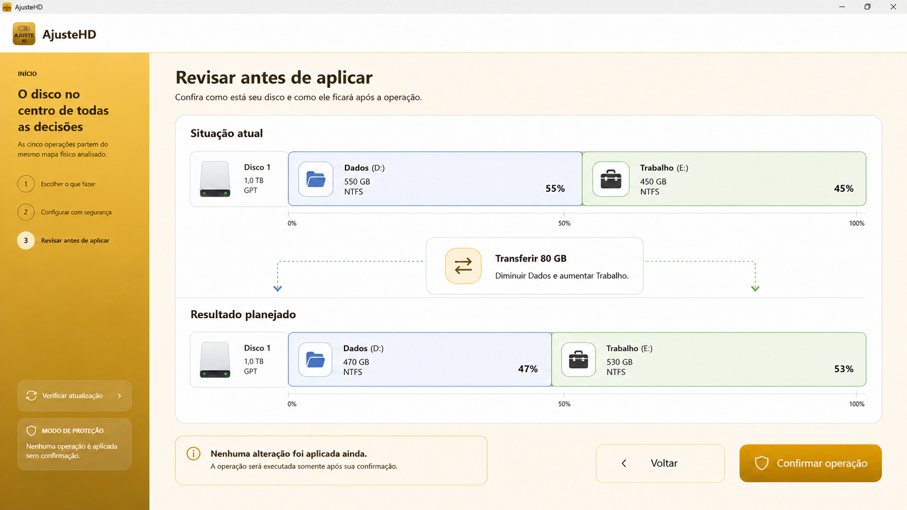
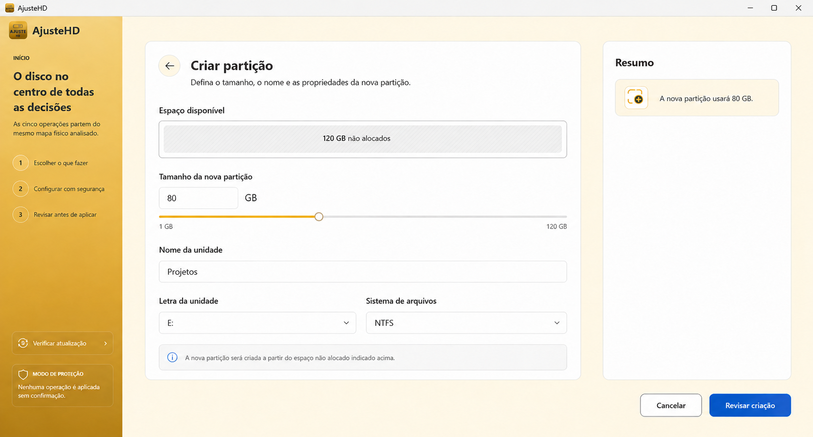
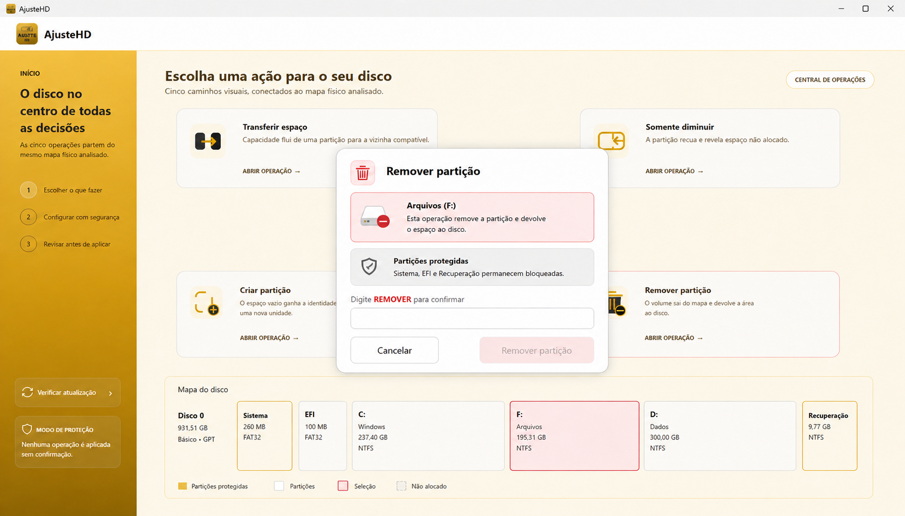
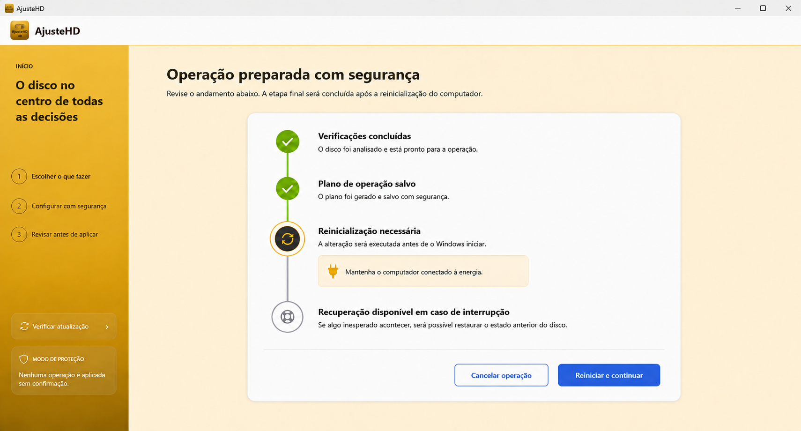
Visão dos Discos
Veja a organização real dos discos, partições e espaços não alocados.
Transferir Espaço
Diminua uma partição e aumente outra compatível imediatamente ao lado.
Aumentar Partição
Use um espaço não alocado compatível para expandir uma partição existente.
Somente Diminuir
Reduza uma partição e deixe o espaço não alocado para usar depois.
Criar Partição
Crie uma nova unidade escolhendo tamanho, nome, letra e formato.
Remoção Protegida
Remova partições de dados enquanto Windows, EFI e Recuperação permanecem bloqueados.
Revisão Antes de Aplicar
Compare o antes e o depois e confirme explicitamente cada operação.
Execução Protegida
Operações sensíveis usam elevação administrativa e validações antes da alteração.
Reinicialização e PreOS
Quando o volume está em uso, o AjusteHD orienta a reinicialização e o processamento antes do Windows.
Verificando o download. O AjusteHD não envia o conteúdo dos discos para servidores. Faça backup dos dados importantes antes de alterar partições.
Ele oferece cinco fluxos: transferir espaço, aumentar uma partição, somente diminuir, criar uma nova partição e remover uma partição de dados.
Sim. O aplicativo apresenta o mapa atual e uma previsão do resultado para você revisar antes da confirmação final.
Não pelo fluxo normal de remoção. Partições do sistema, EFI, recuperação e outras estruturas protegidas ficam bloqueadas.
Volumes em uso pelo Windows nem sempre podem ser alterados durante a sessão. Nesses casos, o aplicativo prepara o processamento para a reinicialização ou ambiente PreOS.
Sim. Alterar discos e partições exige elevação administrativa do Windows.
Não. O mapa dos discos e as operações são processados localmente. A internet é usada apenas para verificar e baixar atualizações.
Sim. Embora o AjusteHD aplique validações e confirmações, qualquer alteração de partições envolve risco em caso de falha de energia, defeito no disco ou interrupção.
O aplicativo verifica se existe uma versão mais recente e baixa o pacote oficial quando você autoriza a atualização.
⬇️ AjusteHD para Windows
Verificando download...
Carregando versão...
Uma conversa entre seus dispositivos.
Copie em um dispositivo e
cole em qualquer outro.
O CopieECole permite enviar textos, links, fotos e arquivos entre computador, celular e tablet sem criar uma conta. Acesse a mesma conversa pelo navegador ou pelo aplicativo para Windows.


Conversas por Dispositivo
Use uma conversa como ponto de encontro para até cinco computadores, celulares ou tablets ao mesmo tempo.
Sem Cadastro
Entre com identificador e código. O conteúdo é temporário, dura aproximadamente 24 horas e não possui backup.
Textos e Códigos
Envie um texto ou trecho de código e copie no outro dispositivo com rapidez.
Links
Compartilhe endereços para continuar a navegação em outra tela.
Fotos e Arquivos
Envie até 20 arquivos por seleção, com até 100 MB cada e 500 MB ativos por conversa. Áudios e vídeos podem ser baixados, mas não são reproduzidos.
Navegador ou Windows
Acesse pelo navegador ou instale o aplicativo no computador para abrir como programa.
Disponível agora. Acesse pelo navegador ou instale a versão para Windows sem criar uma conta.
Não. O acesso é feito com um identificador da conversa, um código de acesso e um apelido, sem cadastro de conta.
A mesma combinação identifica e protege a conversa em todos os dispositivos. Quem tiver os dois dados poderá acessá-la, por isso compartilhe-os somente com pessoas de confiança.
Mensagens e arquivos são temporários e normalmente expiram em aproximadamente 24 horas. O CopieECole não oferece backup.
Fotos, documentos, áudios, vídeos e outros arquivos podem ser compartilhados. O limite é de 20 arquivos por seleção, 100 MB por arquivo e 500 MB ativos por conversa. Áudios e vídeos podem ser baixados, mas não são reproduzidos.
Sim. A conversa funciona pelo navegador em computador, celular ou tablet e também pelo aplicativo para Windows.
Até cinco dispositivos podem permanecer conectados simultaneamente à mesma conversa.
Não. O CopieECole não verifica anexos com antivírus. Baixe somente arquivos enviados por pessoas e dispositivos em que você confia.
Não. O código não pode ser recuperado e conteúdos expirados não possuem backup. Use outra combinação para iniciar uma nova conversa.
🔄 CopieECole no navegador ou Windows
Verificando download...
Softwares de
terceiros
que eu recomendo.
Aplicativos que eu mesmo uso e indico no dia a dia. Todos gratuitos para uso pessoal. Links diretos para os sites oficiais — nada modificado, nada com anúncios. Esses softwares não são desenvolvidos por mim — cada um tem sua própria licença e suporte.

AnyDesk
Acesso RemotoAcesso remoto rápido e leve. Uso pra dar suporte a clientes — instala em 1 minuto, gera um código de 9 dígitos e pronto. Grátis pra uso pessoal.
⬇️ Baixar do site oficial
7-Zip
CompactadorCompactador de arquivos open-source. Suporta ZIP, RAR, 7z, TAR, GZ e mais. Substituto perfeito do WinRAR — grátis de verdade, sem "compre a licença" eterno.
⬇️ Baixar do site oficial
Notepad++
Editor de TextoEditor de texto turbinado. Abre arquivos grandes sem travar, syntax highlight pra dezenas de linguagens, find & replace com regex. O bloco de notas do Windows nem chega perto.
⬇️ Baixar do site oficial
Lightshot
Captura de TelaFerramenta leve para capturar uma área da tela em poucos cliques. Permite editar a imagem na hora e gerar rapidamente um link para compartilhar.
⬇️ Baixar do site oficial
pgAdmin
Admin PostgreSQLFerramenta gráfica oficial pra administrar bancos PostgreSQL. Roda queries, edita tabelas, faz backup/restore, gerencia usuários. Open source — mantida pela própria comunidade do Postgres.
⬇️ Baixar do site oficial
DBeaver Community
Gerenciador de BancosGerenciador universal de bancos de dados. Conecta ao PostgreSQL, MySQL, SQL Server, SQLite e muitos outros, com editor SQL, dados e diagramas.
⬇️ Baixar do site oficial